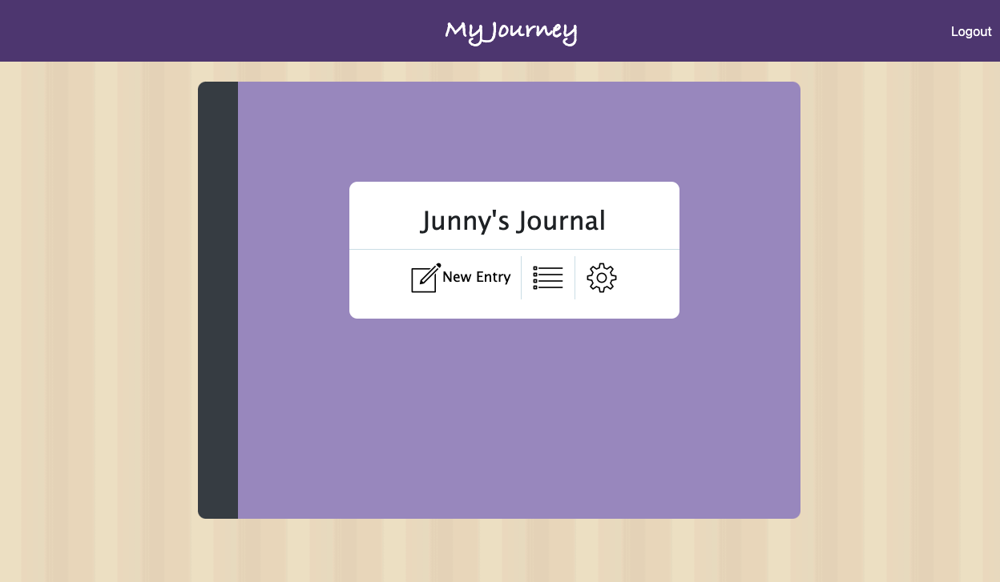
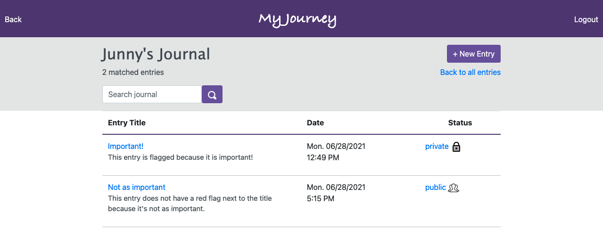
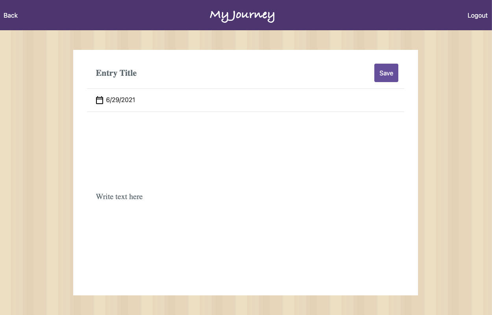
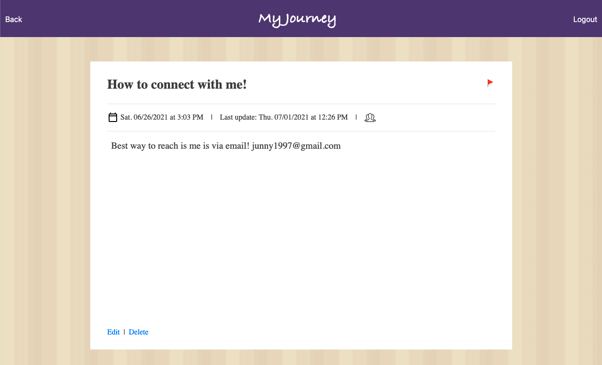
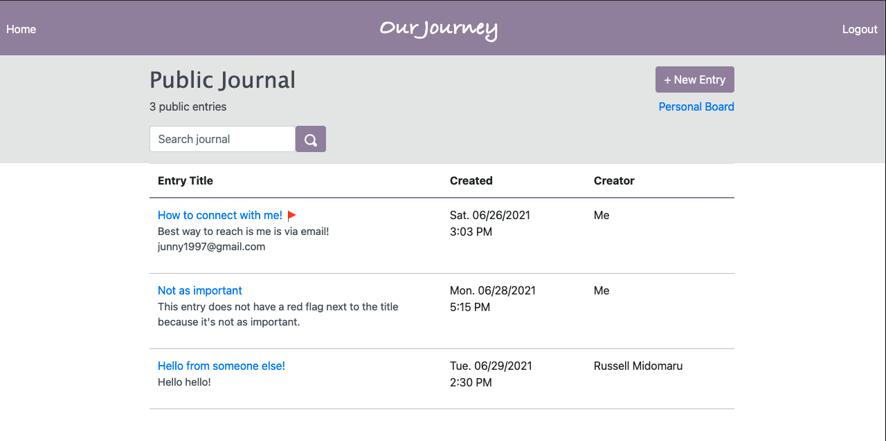
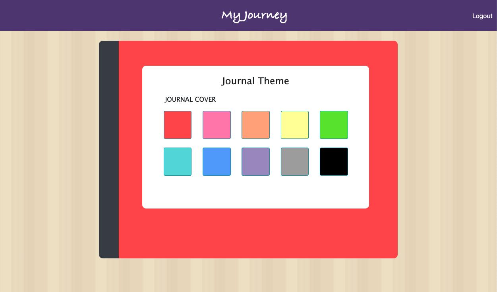
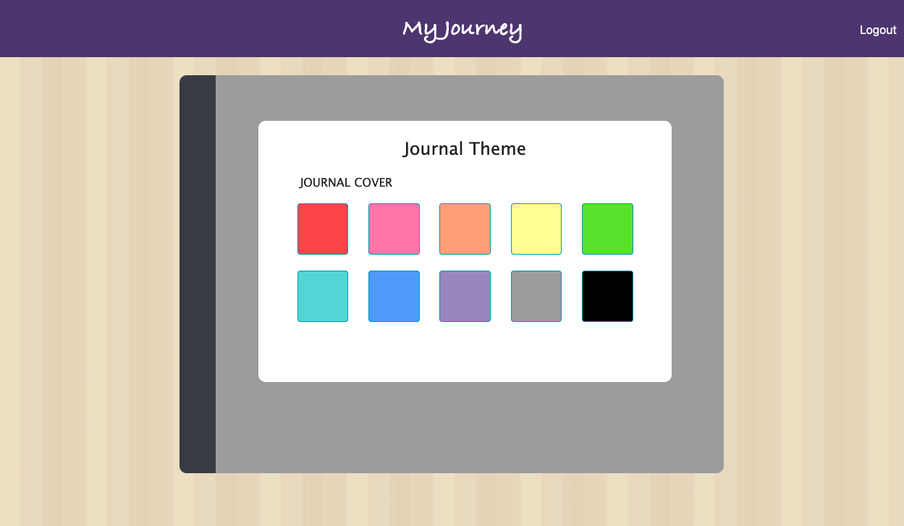
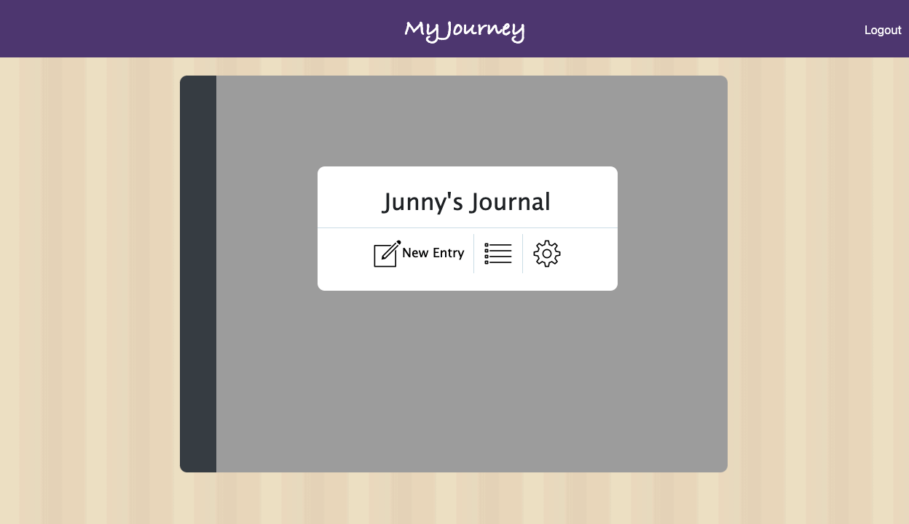

MyJourney

MyJourney is a safe place where users can create journal entries either for themselves or others. The home page looks like this:
From here, the user can register or sign in if he/she already has an account. The registration page has validations (including Bcrypt).
For our purposes, let's sign in with my pre-made account.

Once logged in, the user can see his/her journal cover (default journal color is purple, but as shown later, the color can be changed in the settings):
When the list icon is clicked, the user can see all of the journal entries in one place. From this page, the user can add a new entry, search for entries by keyword(s), see which entries are important/flagged, flip between private and public, click into individual entries, and go to the Public Board.

For example, when the user searches for "important" in the search bar, there are two matched entries. The search matches by the title and/or text of the journal entry (removes duplicates).
Creating a new entry is easy. Just click on one of the + New Entry buttons on certain pages to be taken to this page:
Clicking into one of the journal entries takes you to a page that looks like this:
Let's now go to the Public Board, where posts marked public (not private) from any users can be read. Here the signed in user can go back to his/her private space by pressing on the Personal Board link near the top-right hand corner. Note that the last post shown in this image is a public post by a different user.
Back on the home page (front of the journal), the user can click into the settings icon to change the color of the journal cover:

The user can click on any of the color blocks to choose from and the journal cover color will change accordingly. When red is clicked:
When gray is clicked:
Now the front of the journal accordingly looks like:
Back to Top